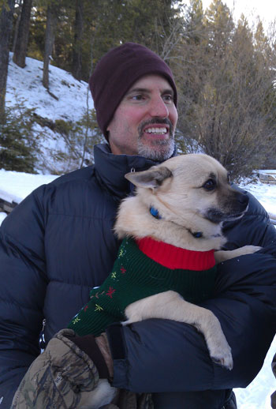
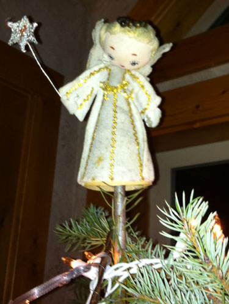
Larry Casazza clan.
She has topped the Casazza family tree for over 40 years.
Here is her song:
Sweet Angie, the Christmas tree angel
On the top of the tippy, tippy top of the tree
All dressed up in stardust and tinsel
Have a very, very, merry, merry Christmas, says she
invention but now I learn that this was a real song by the
Andrews sisters. I love it!
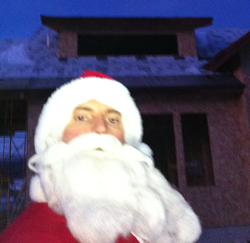
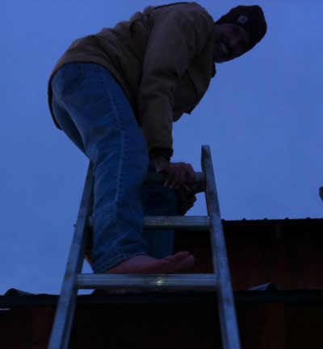

Video of Dan & Eric's
barn board removal process
some snow-covered boards from the roof of the barn. Eric's boots kept slipping
so he decided to do it barefoot - on a metal roof in the cold. But wait, there's
more! Check out the link to a video at right to see the rest of the story.
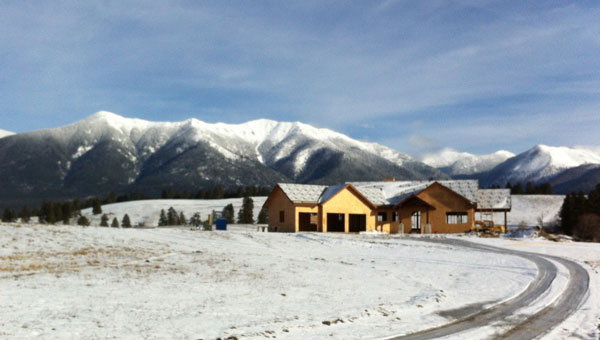
A great view of our new home - it's really happening!
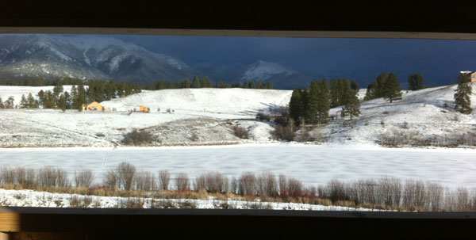
This is the view out of Eric's loft office, looking toward Costich Lake, which was frozen to about 18 inches thick.
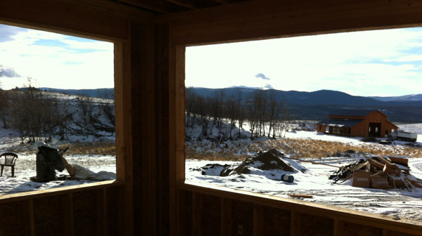
This is the view from my office. I don't know, do you think I have enough windows?!
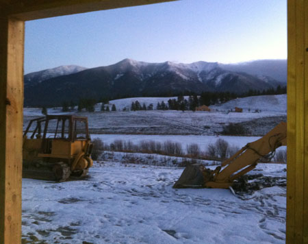
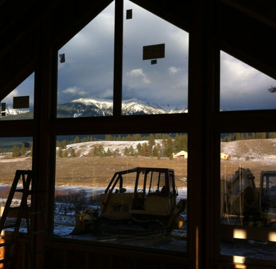
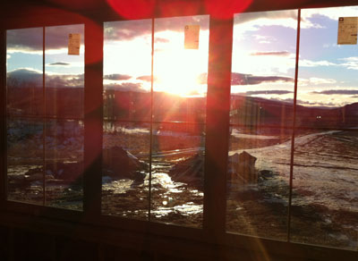
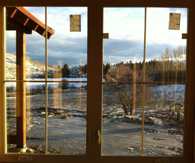
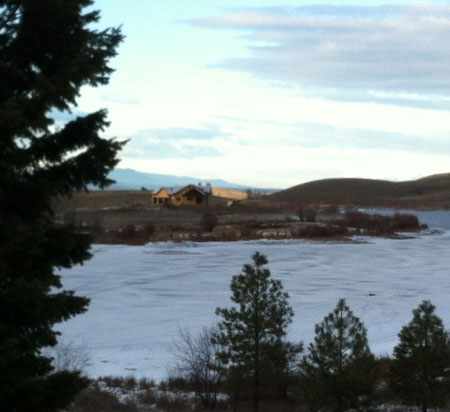
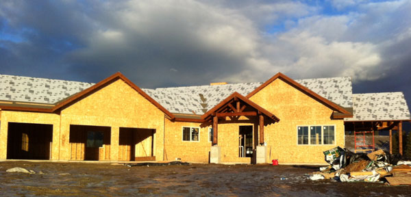
A close up view of the front of the house
A parting shot of Eric with the rack from
Dan's giant buck he got earlier this year
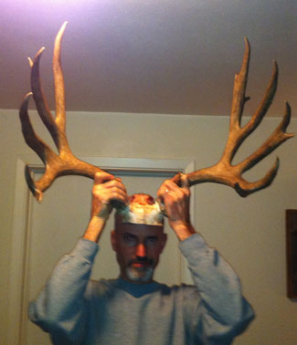